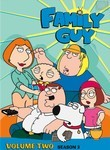
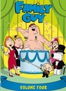
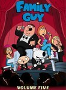
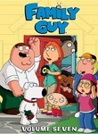

Family Guy
List contains: 375 items, 6.3 hours.
Seasons: 1 | 2 | 3 | 4 | 5 | 6 | 7 | 8 | 9 | 10 | 11 | 12 | 13 | 14 | 15 | 16 | 17 | 18 | 19 | 21 |
Seasons: 1 | 2 | 3 | 4 | 5 | 6 | 7 | 8 | 9 | 10 | 11 | 12 | 13 | 14 | 15 | 16 | 17 | 18 | 19 | 21 |
Stephen Klancher
...has seen 10
...has seen 0.2 hours
...has not seen 6.1 hours

Timeline
Most Recent:
Patriot Games
...has seen 10
...has seen 0.2 hours
...has not seen 6.1 hours
Timeline
Most Recent:
Patriot Games


Stephen Klancher: April 25, 2010 
Was in a hotel in San Antonio and trying to figure out if there was a hotel menu on the TV that said how much it would cost to enable the internet connection and then Bam!, Family Guy was on... and I was happy.



Stephen Klancher: April 23, 2010
I love this deadpan line as Peter rides into the house: "I have a lion now."
Stephen Klancher: January 5, 2010
It's Star Wars therefore I like it. Some really funny moments, and some just average. The animation of ships and other stuff was nice enough to stand out.